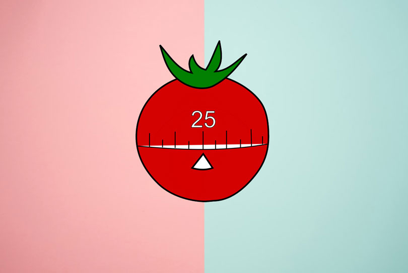
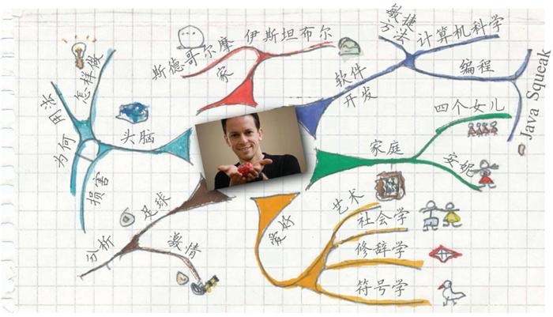
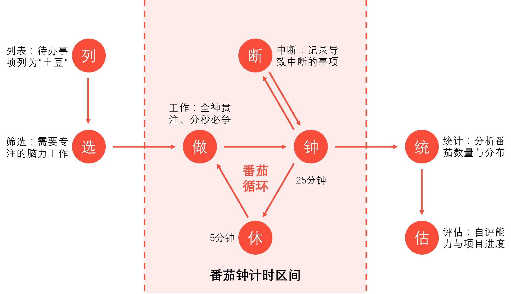
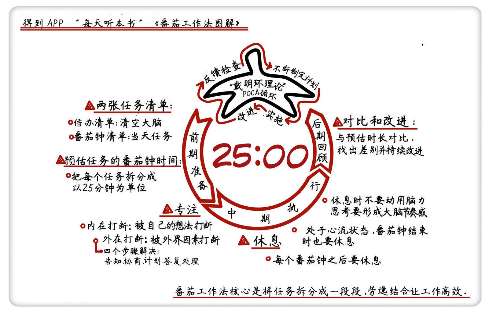

番茄工作法最核心的能量，就是帮助我们培养”专注”的意识、习惯和能力。

番茄工作法是一种时间管理法方法，在上世纪八十年代由意大利人 Staffan Nöteberg 创立。他和我们大多数人一样，也是一个重度的拖延症患者。他在大学生活的头几年，曾一度苦于学习效率低下，于是他做了个简单的实验：我就不信我不能专注 10 分钟。他找来形状像番茄的厨房定时器，调到 10 分钟来督促自己专注。后来，他把这个方法加以改进，形成了番茄工作法。
我们可以将勤奋分为三层：
- 低水平的勤奋靠努力
- 中等水平的勤奋靠方法
- 高水平的勤奋靠选择目标
我们可以将思维也分三层：
- 资源层：关注的核心是资源的投入和产出
- 方法论层：关注的核心是使用资源提升效率的方法论
- 目标层：关注的核心是选择什么目标，以及如何通过战略设定来实现目标
参考链接地址:
第一章 背景介绍
基础部分主要介绍了关于时间的难题、番茄工作法的目的以及基本假设。

产生最多干扰的地方就是我们的大脑，我将从大脑产生的干扰分为，内生干扰和外在干扰。无论是内生的还是外在的，干扰的种类和频次都不会威胁到番茄工作法。番茄工作法能够帮助我们觉察到大脑工作的运作，并帮助我们清醒地决定用何种方法解决干扰。
- [1] 关于时间的难题
对应很多人来说，时间就是敌人。时钟滴答响，焦虑就泛起了，尤其是截止日期逼近的时候，这时候工作和学习的效率低下，最后就发展成了拖延症。使用番茄工作法的时候，时间就是宝贵的盟友，我们用自己的方式去完成目标，在这个过程中不断地提高工作和学习的效率。
- [2] 番茄工作法的目的
番茄工作法的目标是为个人和端对提供一件简单的工作来达到：减少干扰并提高注意力和专注力、提升决策的意识、优化工作和学习的过程、增强个人在复杂的情况下坚持完成目标的意志力。
- [3] 番茄工作法的基本假设
番茄工作法建立在三个最为关键的元素之上，分别是对时间的不同看法、更好地使用大脑、简单上手不复杂的工作。对时间的不同看法，可以让我们不再刻意关注时间的流失，从而减轻焦虑感。更好地使用大脑，则是在我们的学习过程中思维更清晰、思想更集中、反应更灵敏。简单上手不复杂的工作，则是降低任务的复杂性，保证了执行的连续性。
第二章 达成个人目标
达成个人目标部分，描述了番茄工作法并展示了个人通过完成增量目标来使用该方法。

番茄工作法是简单的让你顺应你的天性去工作，因势利导，而不是与之对抗。而其中主为重要的核心，就是在 25 分钟之内只做一件事，然后短暂休息，再与其他事情对比，只做最重要的事情。开始之前，要求你做到抛开杂念的专注，自己动手做练习，从而理解加深。其次就是，在开始没一个番茄时钟的时候，记住一次只做一件事，不要三心二意。最后就是及时的总结和归纳，完善出一个对自己比较合适的方法和规律来。
- [1] 番茄工作法的重要环节
番茄工作者的一天包含以下五个阶段：规划、跟踪、记录、处理、可视化。而实施番茄工作法，则需要一个定时器以及三张用途分别为今日待办、活动清单、记录表格的纸。
| 事件 | 时间 | 内容 |
|---|---|---|
| 规划 | 一天的开始 | 决定一天的活动任务 |
| 跟踪 | 全天的时间 | 收集原始数据，比如一天所花费的功夫和相关指标 |
| 记录 | 一天的结束 | 将一天所得的数据整理成档案 |
| 处理 | 一天的结束 | 将原始数据转化成信息 |
| 可视化 | 一天的结束 | 处理信息，让它帮助我们明白改善的方法 |
今日待办主要记录，一天开始之际，我们需要完成的主要工作列表。活动清单主要记录，在一天结束之际，那些完成了的任务就可以被划掉。记录表格主要记录，描述每一项任务的番茄时钟数以及干扰完成情况的记录等信息。计划外和紧急情况主要记录，出现在计划外但是不得不处理的事件。
- [2] 番茄工作法的执行规则
番茄时钟设置为 25 分钟，完成即在项目后面画 x 做标记，如遇内部干扰则画 - 做标记，如遇到外部干扰则画 o 做标记，然后休息 3-5 分钟再开始下一个番茄时钟。一个番茄钟是不可分割的，一旦开启就必须坚持到底，如果打断则视为此番茄钟作废，一切重头开始。每4个番茄时间后，必须停止手头上的工作，享受一段 15-30 分钟的休息时间。休息时间不思考和处理任何工作上的事情，比如做做深呼吸、受用一杯咖啡等。如果一项任务估值大于 5-7 个番茄，那就将这项任务分割为更小的任务。
如果有什么事情想起来了，就先记录下来，不让他占用你的脑子，你可以在下一次的番茄时钟循环中将之加入你的番茄钟。要注意自己紧急外事项的多少，如果很多，说明你的计划性很差需要加强，其次待办事项和活动清单是有差别的，而且其实差别越明显则说明番茄钟越有效和有用。预估是基于经验的瞻前同时也是便于下次的顾后预估的意义在于不仅增强了自我承诺，同时也是为了更好地调整自己的”番茄钟”。
- [3] 番茄工作法 - 今日待办
| 编号 | 任务事项 | 重要程度 |
|---|---|---|
| 1 | 看《番茄工作法》书籍 | 紧急重要 |
| 2 | 对重点内容进行二次阅读 | 紧急不重 |
| 3 | 进行知识整理并发布博客 | 不急不重 |
- [4] 番茄工作法 - 活动清单
| 编号 | 任务事项 | 所有番茄时钟 |
|---|---|---|
| 1 | 看《番茄工作法》书籍 | xooxx-x-xx |
| 2 | 对重点内容进行二次阅读 | x–xoxx |
| 3 | 进行知识整理并发布博客 | xx-xx- |
- [5] 番茄工作法 - 记录表格
| 日期 | 时间 | 活动 | 预计使用时钟 | 实际使用时钟 | 误差 |
|---|---|---|---|---|---|
| 2020/3/31 | 8:00 | 看《番茄工作法》书籍 | 6 | 6 | 0 |
| 2020/3/31 | 13:00 | 对重点内容进行二次阅读 | 4 | 3 | -1 |
| 2020/3/31 | 15:00 | 进行知识整理并发布博客 | 4 | 5 | 1 |
- [6] 番茄工作法的优化思路
我们通过番茄工作法，作为主要的目的就是帮助我们养成一个良好的习惯，即使是上述的这些条条框框也是为了相同的目录，即为我们量身定制一套专属的时间计划表。通过对计算所花费的时间来估算一件事情预计的时间量，同时也要减少执行时候带来的干扰，让我们的番茄时间更加高效，最终定制我们自己的时间表，提升个人的目标。
时间表最大的风险之处在于我们很可能低估它的重要性，因为我们很容易掉进不尊重他的陷阱里。举个例子，假设现在下午三点，在之前你几乎浪费了一天的时间，你没有完成你的预期的任务量。于是，你告诉自己，今天我要熬夜把时间补回来。英雄主义裹挟着内疚感摧毁了时间表设置的界限，结果第一天晚上你的状态不佳，第二天晚上也不佳，此后每一个晚上都是如此。实际上，这里存在一个危险的恶性循环：时间表延后，脆弱性上升，生产力下降。
第三章 达成团队目标
达成团队目标部分，解释了如何将番茄工作法运用到团队工作中，并介绍了提升团队工作效率的一些方法。

在团队中使用番茄工作法或者其他时间管理策略，可以减少成员间的摩擦、减少不必要的会议、保护团队不受干扰、帮助团队按时完成既定的目标和任务。在这个过程中，我们需要明确两个问题就是，我们做什么、我们什么时候做。法则就是一个小队，一个番茄时间。
- 主要介绍了这三种工作法：柜台工作法、黑客松工作法、破城锥工作法
第四章 结果分析
结果分析部分，则提供了一系列观察结果，从而告诉我们执行的效率以及有效的反馈。
上手番茄工作法几乎费不了什么工夫，但是掌握它却需要持续 7-20 天的使用时间。如果可以成组或者成队使用它，则连续性能更好地得到保障。我们可以对番茄时钟的长度以及休息时间，根据我们实际的情况进行调整，并不是一成不变的。实际上，如果你抱着娱乐身心的目的去看一本书，这时候就根本不需要番茄工作法，你要将番茄时间从自由时间里抽出来。
- 逆转对时间的依赖
番茄时间代表的是时间的片段，也是一个能控制和限制流变的方格，到最后，时间反而依赖这些方格。通过打破和倒转我们对于时间的依赖，时间的新视角就产生了。通过用有限的番茄时间来度量自己，我们便能成功的打破对流变这一概念的直接依赖。
- 调节事件的复杂性
如果每天能够完成几项记不太复杂有不十分简单的颇具挑战性的任务，我们的动力就能最大化，要达到这个效果，只要简单的遵循下面几个法则就可以了。
如果任务预计要花费 5-7 个番茄时间，那就必须将它分解开。如果任务预计锁花时间一个番茄时间，把他们累积起来。复杂性不那么高的任务更容易预测时间，量性预测的准确性也能够提高。将任务分解，这样他们的增量价值就能提高我们完成目标的决心。
- 思想抽离的有益处
番茄工作法里频繁的小憩对应流动的、清醒的和有效的大脑活动颇有益处，并能够带来生产力的提升。
- 观察和不断地反馈
在工作和学习过程中不断提升，这样的机会使你更坚定，并能够激发你的个人兴趣。
- 保证可持续的节奏
尊重每个番茄时间之间以及每组番茄时间之间的休息安排，你可以用自己的节奏工作或学习。你会疲倦，这很自然，但是你不会精疲力尽。换句话说，通过有意识的安排休息时间和工作内容的复杂性，最后每个番茄工作法的使用者都能了解自己的可持续性节奏和生理节奏。
第五章 使用法则
主要整理使用番茄工作法当中，应该注意的法则和原则。
- 一个番茄时间包括
25分钟的工作时间和5分钟的休息时间。 - 每完成
4个番茄时间，休息15到30分钟。 - 一个番茄时间不可分割，没有所谓的半个番茄时间或四分之一个番茄时间。
- 一个番茄时间必须有始有终。
- 如果一个番茄时间被不断中断，则该番茄时间作废。
- 如果在一个番茄时间没结束就完成了任务，请检查、回顾任务，直到定时器响起。
- 保护番茄工作法，及时告知对方，迅速协商、重新安排中断事件并按照协商时间回复来找你的人。
- 如果任务预计要花超过
5到7个番茄工作时间，将它分解开来，将复杂的任务分解成几个小任务。 - 如果任务预计所花时间不够一个番茄工作时间，把他们累积起来。
- 结果是一个又一个番茄时间的积累。
- 时间表总是优先于番茄时间。
- 一个小队，一个番茄时间。
- 下一个番茄时间会更顺利。